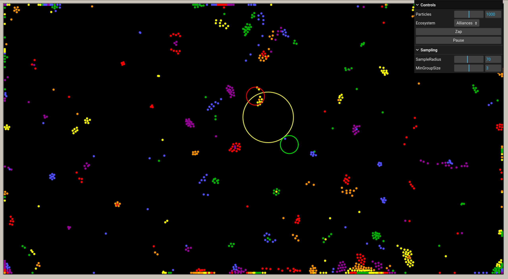
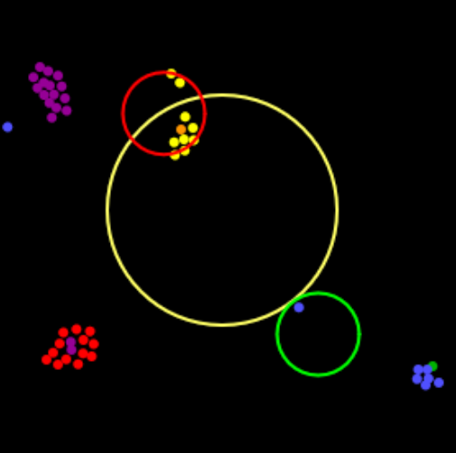
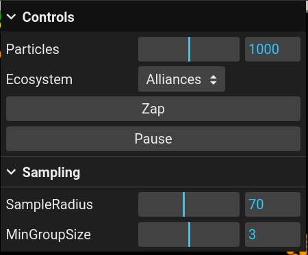
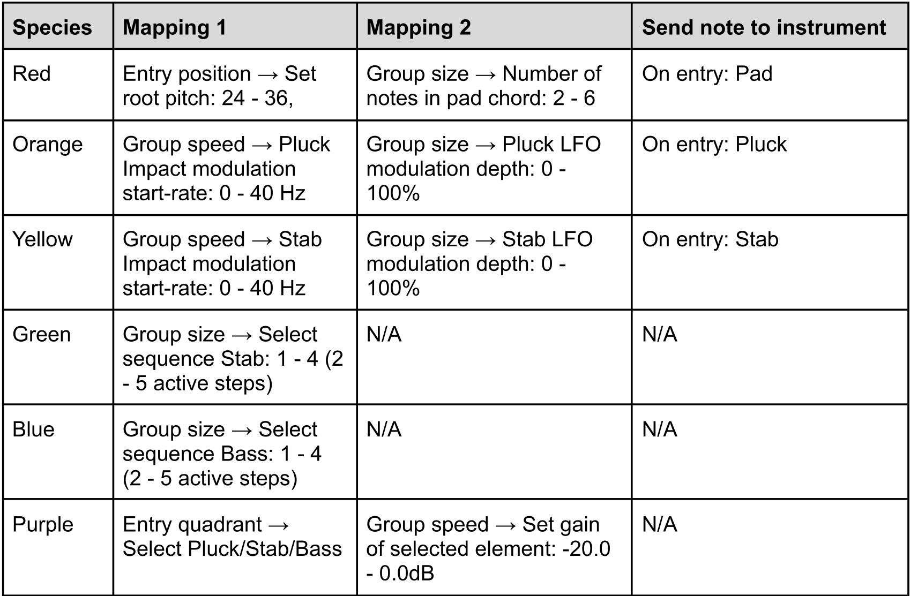

Real-time interactive musification of an artificial particle-life system
Generative Music · Sound Interaction · Human-Algorithm Interaction
Colaborated with Oskar Lövgren, Barry John Wootton, Yu Lu · 2025
Full Report
Artificial life algorithms have been opening up new ways of music generation and expression.
But, can they be a composition partner to human creators rather than just a tools?
How would human interference change the musical outcome while still keeping to stochasticness?
Design Concept
We wanted to explore real-time musical interaction with a generative system, where a person can influence its behavior but never dictate the outcome.
We choose particle-based artificial life, where the music emerges from the particle system's own dynamics with some level of human input. This let us treat the artificial life system less like an instrument being played, and, instead, a live collaborator.
System Design
We built on Clusters, an open-source, browser-based particle-life simulator, and added real-time MIDI outputs that connnects to Ableton Live. Particles belobgs to different "species" (by color) with simple attraction and repulsion rules that lets them cluster into groups and dissolve on their own.

Interaction Design
As the human collaborator, we interact with the simulation through placing/moving a circular "sample area" on the screen, where both particles entering and existing this zone will trigger musical events and changes. This allows use to "listen" to one region at a time, rather than tracking every particle at once that removes the human collabotation aspect.
We don't interact with individual particles, but treat them as a cluster. When a particle enters the "sample area", we trace from its entry point, check the others that are trailing close behind it, and then consider them as a cluster.

Beyond observing, the system allows direct interference tp the simulation by dragging particles manually into the sample area, "zap" to accelerate their movement in a random direction for a moment, and pausing the simulation. These allows the human to nudge or provoke the system without ever fully controlling it, which is the core interaction we are aiming after.
There are also other prameters that can be adjusted for the interaction with the simulation, such as changing the number of total particles, sample area size, cluster size, and attraction/repulsion rules. These are parameter changes that are already offered by the original Clusters system, but we replaced the default interface with a floating, collapsible lil-gui panel to trim down to only relevant controls and leave more screen space for the particles themselves.

Musical Design
Each particle species were given a distinct musical role: one controlling harmony (entry position → root pitch, group size → chord density), others driving modulation, sequencing, or mix balance. This allows the system to behaved less like "one species = one full sound" and more like an ensemble with distributed responsibility create a more fluid and continues musical texture.

Human-ALife Collaboration?
The open question we didn't fully resolve is how people will actually use this system to create music, like how will it be used for coposition of live performance? Another question is that is there a meaningful connection to a listener who isn't watching the particles or not knowing the system design, will it reads as a genuine cause-and-effect relationship, or just as pleasant coincidence. Given more time, we wpuld want to test this with actual musicians and listeners to gain a deeper understanding of how humam-alife musical collaboration can look like.